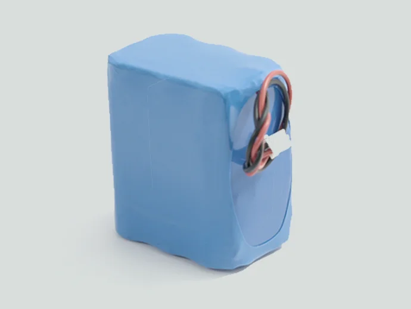
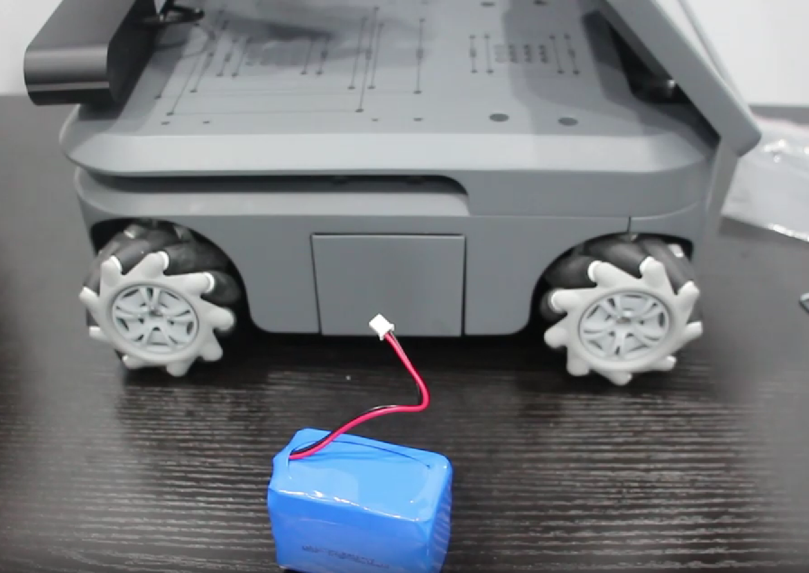
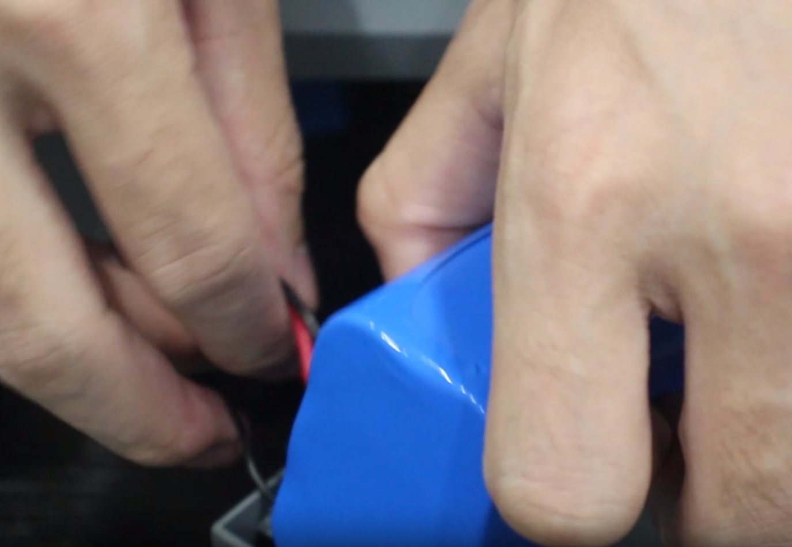
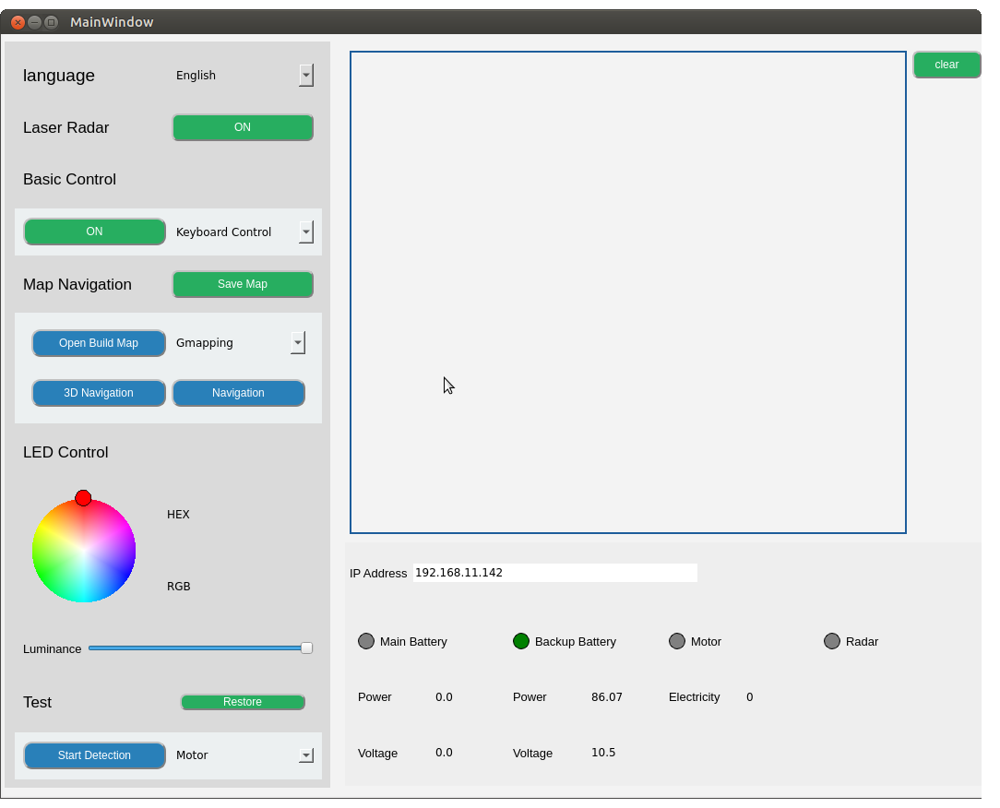

备用电池
兼容型号： myAGV PI 2023、myAGV Jetson Nano 2023
它与 myAGV 2023 的主电池规格相同，并采用快速安装方法，可延长 myAGV 2023 系列的运行时间。

产品参数
| 参数 | 规格 |
|---|---|
| 容量 | 6400mAh |
| 电压 | 11.1V |
| 兼容性 | myAGV PI 2023 , myAGV Jetson Nano 2023 |
如何使用
1.从附件盒中取出备用电池，找到 myAGV 左侧的电池仓。

2.用手按压电池仓两侧，电池仓外壳会自动弹出，连接备用电池的正负极接口。


3.将电池直立放入电池仓，然后将白色插头插入空位，以防干扰外壳安装。


如何知道电池是否已正确安装和识别？
请打开 myAGV_UI
备用电池的指示灯将亮起，电压值可以返回，表明安装成功。
